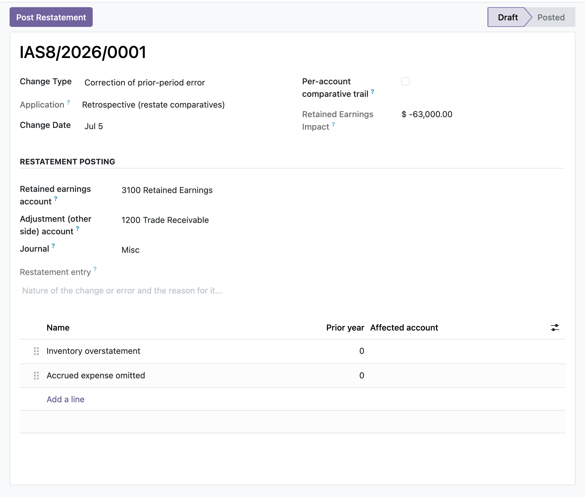

Two disciplined registers for IAS 8 accounting changes and IAS 10 events after the reporting period, with manager-gated, freeze-once-posted general ledger booking of the restatement and the adjusting entry.
Each affected line item carries as previously reported, the signed adjustment, and the computed restated amount, and the register totals those adjustments into the opening retained-earnings impact, so the disclosure and the figure that hits equity come from the same lines.
Adjust-or-disclose is computed from whether the event evidences conditions existing at the reporting date. A dividend declared after year end cannot be marked adjusting, a constraint blocks it, because it is a non-adjusting event that is disclosed, not recognised as a liability.
Booking is restricted to an EH Accounting Manager. Once posted, the driving fields and lines are locked, deletion is refused, and the only correction path is Reset to Draft, which posts a reversal and reopens the record so nothing drifts away from its ledger entry.
An accountant records a prior-period error in the IAS 8 register, entering each affected line as previously reported and its adjustment; the restated column and the opening retained-earnings impact compute as they type. A manager sets the retained-earnings, adjustment and journal accounts and posts the restatement, which is sealed to the general ledger. Separately, a litigation settlement that landed after the reporting date is logged in the IAS 10 register as an adjusting event and booked to the reporting date, while a dividend declared post year-end is left disclose-only because the register refuses to make it adjusting. Later a figure needs correcting, so the manager resets the restatement to draft, the module reverses the original entry into the ledger, edits reopen, and a corrected restatement is re-posted.
In the shipped code today, each one a place where a cheaper module silently does the wrong thing.
A dividend declared after the reporting period cannot be flagged as an adjusting event; a validation constraint refuses it, because IAS 10.12-13 treats it as non-adjusting, disclosed and not recognised as a liability at the reporting date.
A change in accounting estimate is derived as prospective and is refused for posting; only retrospective policy changes and error corrections can book an opening retained-earnings restatement (IAS 8.36).
Adding a restatement line to an already posted change is blocked at create time, not just on write and unlink, so the stored retained-earnings impact cannot silently drift away from the posted journal entry.
A posted restatement or adjusting event cannot be deleted or raw-reset through the ORM; both legs stay in the ledger and the only way out is a manager reset that posts a reversal, preserving the audit trail.
Both the single net plug and the per-account comparative trail derive one balancing opening retained-earnings leg from the summed adjustments, and a zero net impact is refused rather than posting an empty entry.
odoo 19 IAS 8, change in accounting policy odoo, prior period error correction, retrospective restatement of comparatives, as previously reported adjustment as restated, change in accounting estimate prospective, opening retained earnings restatement, IAS 10 events after the reporting period, adjusting non-adjusting event, dividend declared after reporting period, subsequent events register odoo, IFRS accounting changes odoo community

Prior-period restatement trailAn IAS 8 error correction with each affected line shown as previously reported, the adjustment, and as restated, so the comparative trail and the retained-earnings impact are auditable.
Premium ERP Heritage modules that extend the same stack, each built to the same engineering bar.
The Canada country pack for the ERP Heritage Employment Hero integration
Imports finalised pay run journals from the Employment Hero payroll platform (KeyPay) into Odoo Community account...